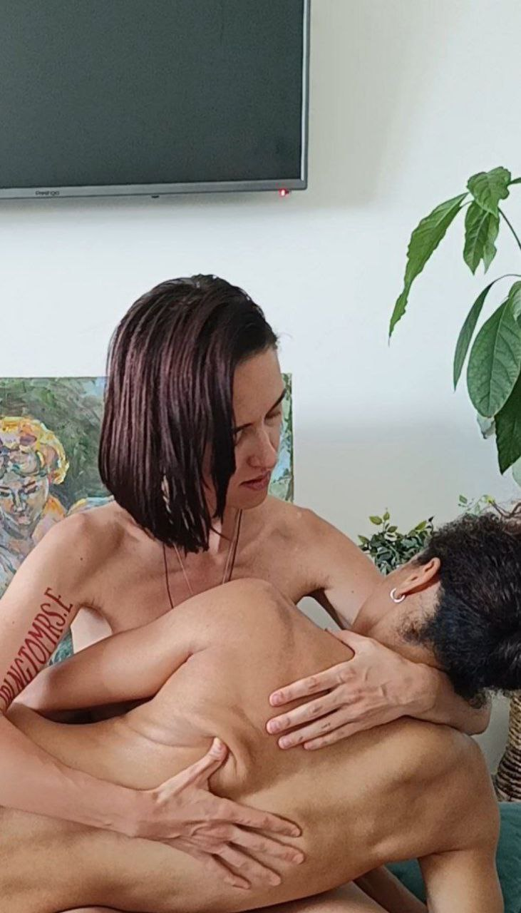
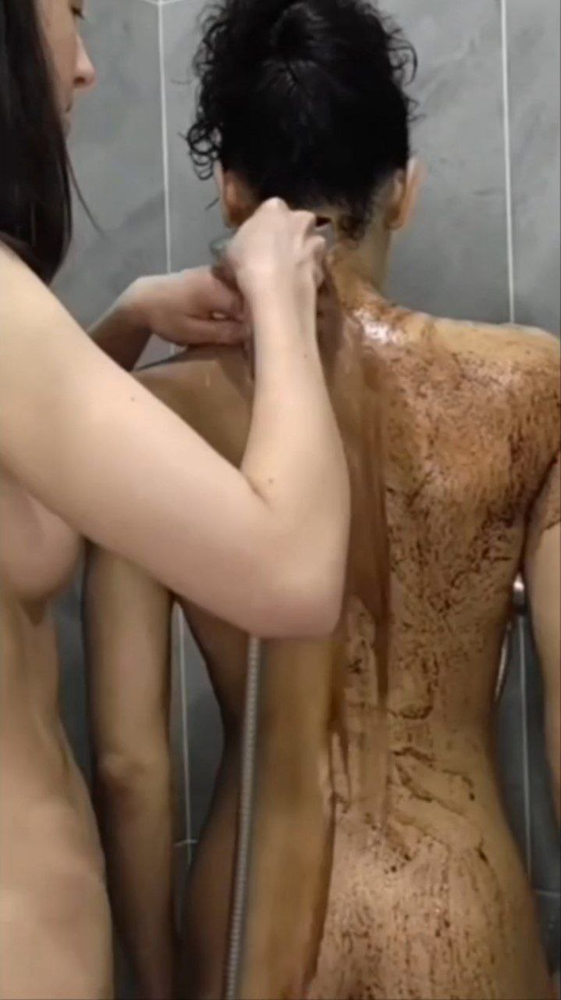
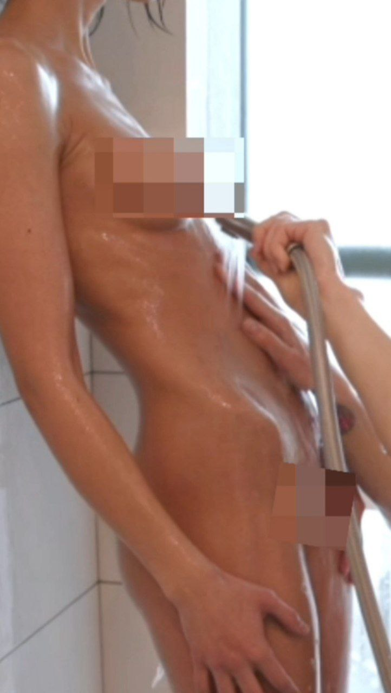
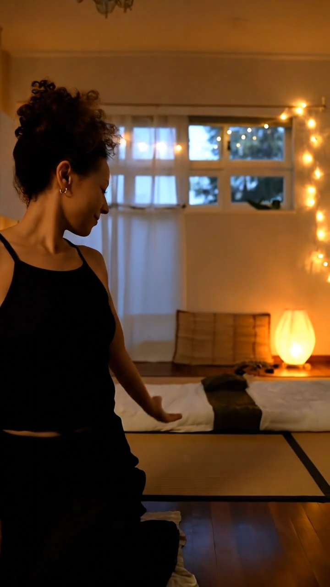
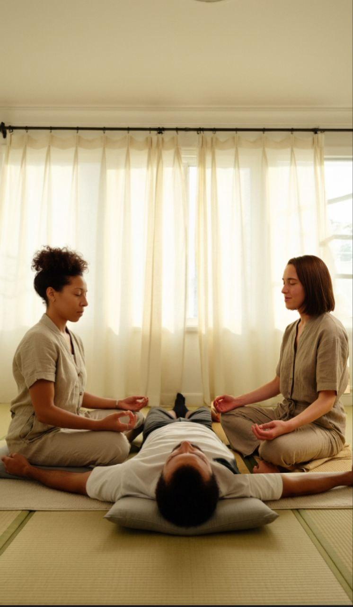
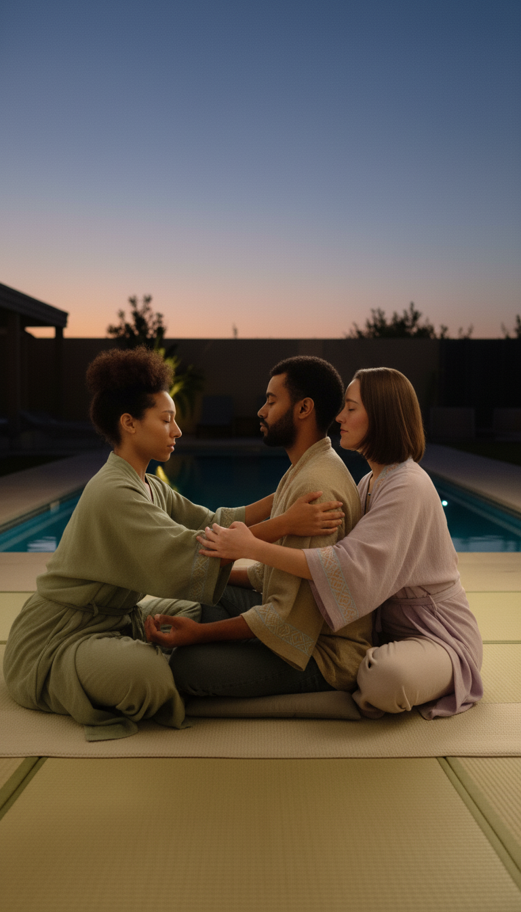
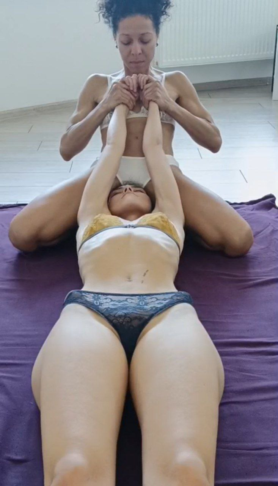

90 хвилин







Ми НЕ БЕРЕМО передоплату, якщо сеанс проходить у нас. Оплата здійснюється готівкою на місці на початку сеансу.
З 10:00 до 19:00 включно. Плануємо день у день.
Якщо раніше (на 8 або 9 ранку) або після 19:00 (20 або 21 вечора) ми можемо
запросити, але бронь буде платною (25% вартості на карту, решта готівкою перед сеансом).
Нас приваблюють чоловіки,
які здатні не лише говорити про бажання,
а й ставати частиною красивих подій
і важливих етапів нашого життя.
Це може бути суттєва участь в одній із наших великих мрій:
— Купівля автомобіля для нового етапу життя та подорожей
— Весільна церемонія в Мексиці для двох наречених - ⚢
— Намібія — подорож, яку хочеться пам’ятати все життя
Ні.
Так. Це частина наших сеансів. Ми м’яко ведемо процес, і ти природно відчуваєш, де дотики доречні, а де порушують ритм.
Ні. Концепт нашого каналу - "тільки для своїх", і це для нас важливо. Ми не запрошуємо тих, хто хоче нас просто протестувати.
Не хвилюйся, гроші не будуть зніматися автоматично. Ти можеш оплатити карткою через платформу. Залежно від
терміну твоєї підписки (1 або 3 місяці), платформа надішле тобі сповіщення із запитанням: «Бажаєш продовжити
підписку?». Ти можеш скасувати її в будь-який час.
Інший варіант оплати – криптовалютою на нашу адресу.
Наша основна локація – Скандинавія, там ми проводимо більшу частину часу, але часто буваємо в інших країнах. Спостерігай за нашими історіями в телеграмі, інстаграм та оголошеннями, щоб мати змогу з нами зустрітися та обійнятись у наш наступний приїзд.